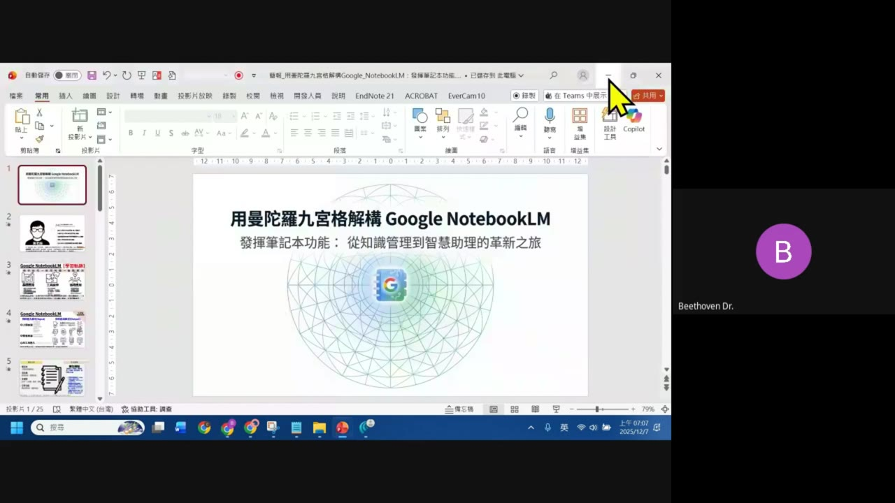
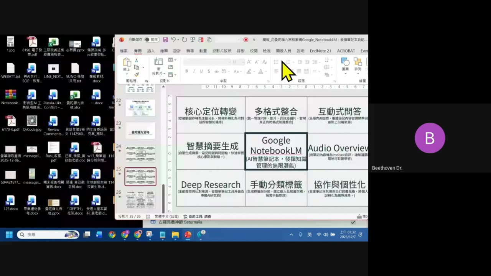
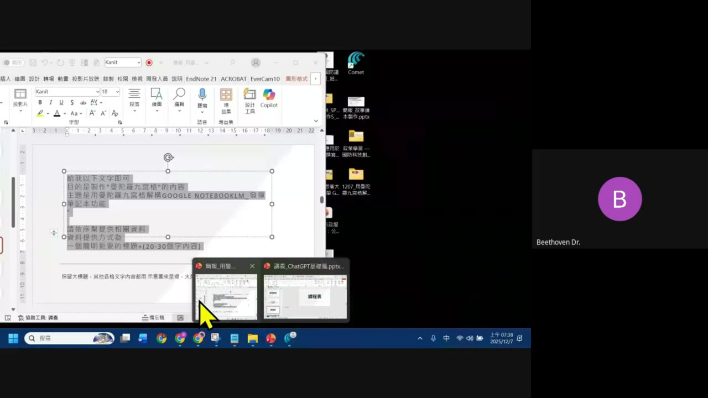
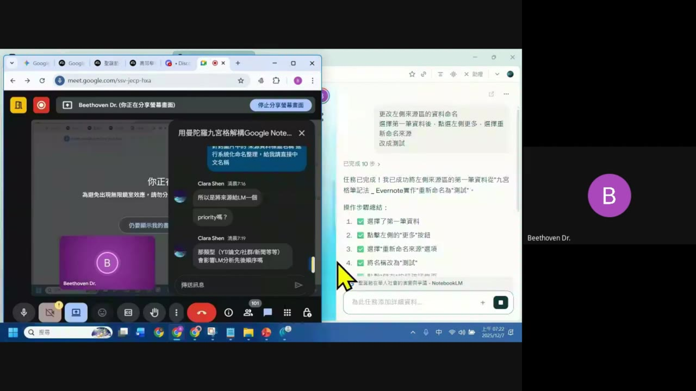
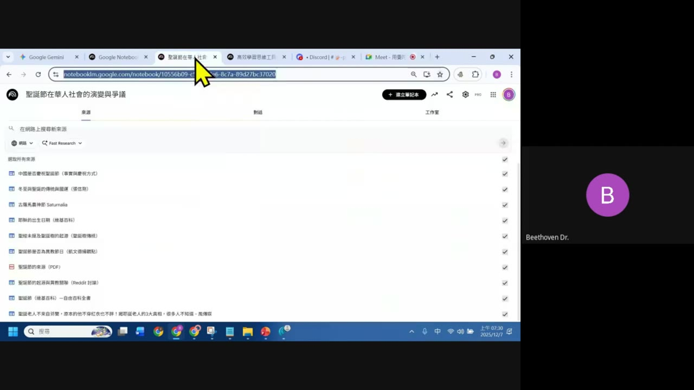
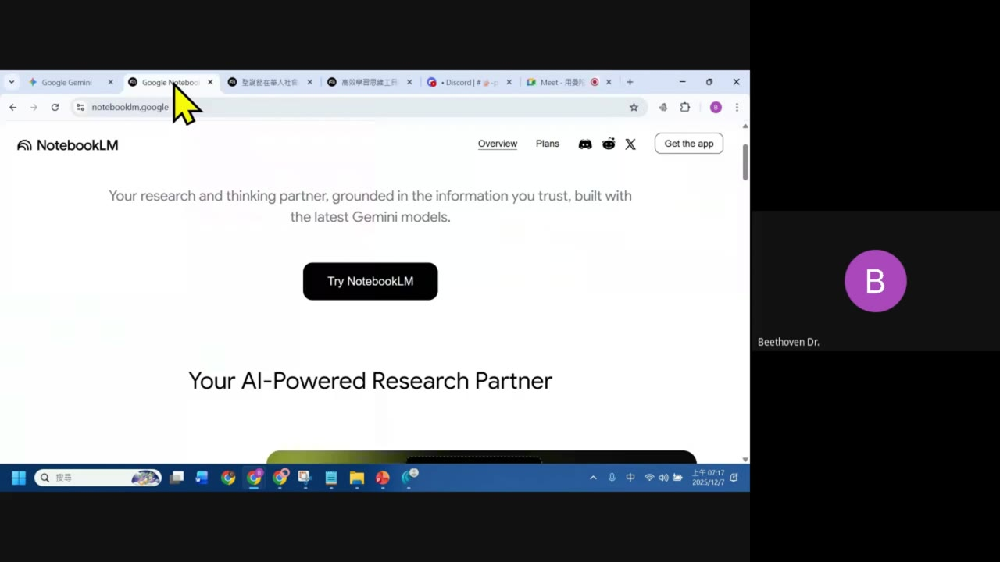

0. 課程資訊與教材
| 課程名稱 | EP1「用曼陀羅九宮格解構 Google NotebookLM：發揮筆記本功能」 |
|---|---|
| 頻道 | 生成式 AI 應用電台・晨學講堂（早起場） |
| 直播日期 | 2025/12/07 上午（畫面時鐘顯示 07:06–07:47） |
| 教材 | 本集 Drive 資料夾只保留錄影回放（41 分鐘），簡報是講者當下開啟的本機 PowerPoint 檔（畫面可見 25 頁投影片縮圖），未附獨立檔案 |
| 一句話先懂 | 把「曼陀羅九宮格」這個思考工具借來理解 NotebookLM：先想清楚九宮格內容，再用一段 Prompt 請 AI 幫你把內容生出來，這套方法可以套用到任何你想介紹的主題或專業。 |

💡 開場（00:57）：「這應該是大家上過最早的 AI 課程」——EP1 是晨學講堂的第一集，時段訂在清晨、人數刻意控制在較小規模，方便大家「學習比較集中一點」。
1. 什麼是「九宮格拆解法」
開場（01:28–02:44）講者說明這集的兩個部分。
- 用九宮格思考：先把「如果用九宮格來想 NotebookLM，大概會長什麼樣子」列出來——例如想介紹 NotebookLM，就先把自己心得上的重點交給 AI，請它幫忙整理成標題＋短說明，即使排版不會太漂亮，但能把脈絡先釐清。
- 把內容寫出來：這一步「學完之後可以套用到各個主題」——不限 NotebookLM，換成你自己的學科或專業，也可以用同一套方式整理成一頁九宮格，再用 Google Gemini（講者提到 Nano Banana Pro 模型）把表格內容轉成一張示意圖。
⚠️ 逐字稿原話（01:51）：「通常我會用這一個工具作為一個筆記……我再理解一個 AI 工具、我再使用一個 AI 工具的心法，這樣會比以前寫一大堆文字介紹快很多。」——重點不是九宮格本身漂不漂亮，而是用它逼自己先想清楚重點分類。
2. 九宮格全貌：NotebookLM 的九大定位
錄影 25:42 畫面實錄——當天簡報第 25／26 頁，完整九宮格內容（中心格是主題，其餘 8 格是延伸定位）。

| 格子 | 內容（原文照錄） |
|---|---|
| 核心定位轉變 | 從被動儲存轉為主動分析，將資料視覺化呈現 |
| 多格式整合 | 統一管理 PDF、影片、音訊或圖片，跨平台的多種格式知識庫 |
| 互動式問答 | 直接向 AI 提問，根據筆記內容提供精準答案並附上引用來源 |
| 智慧摘要生成 | 自動生成摘要、常見問題與時間軸，快速掌握核心重點與脈絡 |
| Google NotebookLM（中心） | AI 智慧筆記本，發揮知識管理的無限潛能 |
| Audio Overview | 將筆記內容轉為 Podcast 音訊，讓知識隨時可移動學習 |
| Deep Research | 主動搜尋跨比對來源，快速把筆記升級為專業 AI 研究員 |
| 手動分類標籤 | 生成檔案自動分類，建立個人化知識架構，減少手動整理 |
| 協作與個性化 | 支援筆記本共用與自訂回覆風格，讓知識轉化為團隊資產 |
「不是只產出結果，整理資料的過程本身就在幫你釐清脈絡。」
—— 開場（02:30）大意
3. 怎麼生出九宮格：可重複使用的 AI Prompt 模板
錄影 31:21 畫面實錄——講者在文件裡直接打出來、當場示範的 Prompt 原文。

PROMPT 模板（可替換主題）給我以下文字即可
目的是製作「曼陀羅九宮格」的內容
主題是：用曼陀羅九宮格解構 GOOGLE NOTEBOOKLM_發揮筆記本功能
請依序幫我提供相關資料，資料提供方式為：
一個簡明扼要的標題 + (20-30 個字內容)
保留大標題，其他各格文字內容都用示意圖來呈現
💡 這段 Prompt 只要把「主題」那一行換掉，就能套用到任何你想拆解的主題或專業——這正是開場承諾的「第二部分：怎麼把內容寫出來」。生出文字內容後，講者再用 Google Gemini（提到 Nano Banana Pro 模型）把表格轉成一張九宮格示意圖，不需要自己排版。
4. 示範一：用 AI Agent 自動操作 NotebookLM
錄影約 16:08 畫面實錄——Google Meet 分割畫面，右側是一個對話式 Agent（畫面暱稱 Clara Shen）正在遠端操作瀏覽器。

- 操作步驟總結（畫面文字照錄）：① 選擇了第一筆資料 ② 點擊左側的「更多」按鈕 ③ 選擇「重新命名來源」選項 ④ 將名稱改為「測試」。
- 示範重點：不是自己手動一步步點，而是直接下指令讓 Agent 幫你在 NotebookLM 介面裡操作（重新命名來源檔案），完成後 Agent 會回報已完成的步驟數與結果。
⚠️ 誠實聲明：錄影中此區塊語音大多是操作時的短促回應（逐字稿多為「好」「OK」等語氣詞），詳細口語說明沒有完整錄到；本節內容以實際截圖畫面上的文字紀錄為準，不做語音以外的推測。
5. 示範二：多來源研究筆記本
錄影 23:24 畫面實錄——另一個 NotebookLM 筆記本範例，主題與 EP1 主軸不同，用來展示 NotebookLM 一次彙整多種來源格式的能力。

對應逐字稿（22:19）：「中間這個互動的問答其實非常重要，加上它現在的模型已經跟著 Gemini 更新到 3.0，所以它在互動問答的時候……」——呼應第 2 章九宮格裡的互動式問答與多格式整合兩格：不管來源是網頁、PDF 還是社群討論串，都能被同一本筆記統一吸收、統一問答。

6. 重點整理
- 九宮格拆解法：先想清楚「中心主題＋8 個延伸定位」，再動手整理內容，逼自己先釐清脈絡而不是急著產出。
- NotebookLM 九大定位：核心定位轉變、多格式整合、互動式問答、智慧摘要生成、Audio Overview、Deep Research、手動分類標籤、協作與個性化，圍繞著中心的 AI 智慧筆記本。
- 可重複使用的 Prompt 模板：換個主題名稱，同一段 Prompt 就能幫任何領域生出一份九宮格草稿。
- AI Agent 操作示範：讓對話式 Agent 直接幫你在 NotebookLM 介面裡做重新命名之類的整理工作。
- 多來源研究筆記本：維基百科、PDF、社群討論串等不同格式的來源，可以匯入同一本筆記，統一問答與摘要。
7. 資料來源與製作說明
- 原始教材：EP1「用曼陀羅九宮格解構 Google NotebookLM：發揮筆記本功能」錄影回放（41 分鐘，anyone-reader 權限，公開可下載）。本集 Drive 資料夾未附獨立的簡報檔或課堂筆記 md。
- 製作方式：下載完整錄影 → 抽取語音以 faster-whisper（small 模型）產出逐字稿 → 以場景變化偵測抽取畫面關鍵幀 → 親眼逐張判讀畫面內容 → 對照逐字稿與畫面截圖整理成本頁章節，畫面文字（九宮格內容、Prompt 原文、Agent 操作紀錄）皆為照片直接抄錄，非推測或改寫。
- 誠實聲明：本集約 20–27 分鐘與部分中段語音多為操作時的短促回應（「好」「OK」等語氣詞），推測講者當下多在安靜示範操作畫面而非持續講解；這幾段內容以畫面截圖上可直接讀到的文字為準，未在音訊中明確說出的細節不補述、不杜撰。
- 介面參考：版型沿用本站 EP29–EP46 課堂筆記的乾淨白底編輯風格。